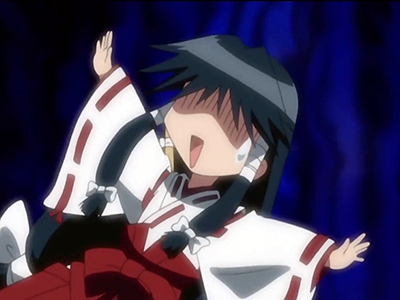

They are my wives
高坂桐乃是高坂家的幺女，外表出众、成绩优秀、运动万能的少女，而且还兼职流行杂志的专属模特。阳光的外表下却有着特别的兴趣，是个在意周围眼光的御宅族，喜欢妹系的成人游戏和动梅露露的动画。原本与哥哥的关系冷淡到极点，在被哥哥偶然发现了兴趣后开始找哥哥接受“人生咨询”。虽然平时对哥哥表现得很厌恶，但实际上是个不折不扣的“兄控”。
小时候的桐乃是个很粘哥哥的孩子，总跟在哥哥的后面。但是在读三四年级的时候，当时的京介因为觉得桐乃很烦所以不跟她玩。有一次，桐乃对哥哥大吼“无论如何都要跟着你”的时候，却被京介跑掉了，虽然桐乃拼命追在哥哥后面，但结果还是被抛下了。当回过神来发现已经身在一个完全陌生的地方的桐乃，只能一个人大哭，却没有一个人来帮助她......因为发生了这件让她非常不爽的事，桐乃在心中产生了“你给我走着瞧”的念头，所以在那时候就开始为告别运动白痴而练习跑步、开始注意自己的外表而打扮自己，同时拼命地提高自己的学习成绩。此后，在田村麻奈实的帮助下，与京介解开了导致兄妹间多年来“冷战”的误会。最后，在圣诞夜接受了京介的告白，与京介成为一对有限期的恋人。在京介的毕业典礼当日、与京介举行婚礼后，重新做回一对普通的兄妹。
桐崎千棘是美国黑帮“蜂巢”老大的女儿，混血儿，父亲是美国人，母亲是日本人，是名有着苗条身材、金色长发(发梢则是粉红色)、淡蓝色眼眸(小时候是褐色)的美少女。文武双全，才色兼备。同时也是个急性子，傲娇，极其不坦率，常常冲动行事。害怕又暗又狭窄的场所和打雷。喜欢吃的食物是拉面。班上男生人气第1名。在恋爱方面很迟钝。在10年前与初恋男孩做过约定，手中握有一把钥匙。因双方父亲的关系，必须和从相遇开始个性就非常不合的一条乐假扮成情侣。虽然在公众场合两人表现得很甜蜜，以“达令”和“甜心”互称。但私底下经常起吵架，称呼乐作“豆芽菜”，也被乐称作“猩猩”。但是在交往的过程中，两人慢慢发现彼此的优点。越是多了解他一些，千棘就越在意他一些，千棘就这样慢慢受到一条的吸引。
在夏天的海边，因为被乐的话伤到而跟他大吵了一架。因为一看到乐的脸心里就一片混乱，怎么样都无法坦率，所以不由得对乐采取冷淡的态度。但在面对文化祭中班级的危机，两人透过在话剧中演出罗密欧与朱丽叶终于和解。正因为是在演戏，连平时不敢说的话都说得出口。跨越这次危机后，千棘察觉了自己对乐的感情。在文化祭时确认了自己喜欢乐的心意，感情也逐渐弄假成真。在知道乐和小咲互相喜欢后，决定退出。在接受乐妈妈的建议来到当年的约定之地确认真相时，在那里被乐告白，两人在数年后结婚。数年后成为在世界各地活跃的时尚设计师。

麻知是一个巫女，在现实的日本中，大概是大学一年级生或是专校一年级生。是海龙神社的巫女，绫音的姐姐。穿着红色的巫女衣服。身高比妹妹绫音矮，样子仍像一个儿童一样。而行人最初认为她是绫音的妹妹，但后来才她是绫音的姐姐，并对此大吃一惊。由于蓝兰岛仍残留着13～14岁就要结婚的江户时代的习俗，因此身边的人都以“未嫁的成年人”来看待麻知，而麻知本人亦对此非常介意。因此在麻知面前，“嫁不出”、“年长”等等诃语都是禁忌。虽然绫音曾注意到这些都是麻知的弱点，但此举迫使麻知召唤式神来惩罚她。而且，当她愤怒的时候，可怕的任谁也不敢违逆她的意思。
懂得腹语术。经常神出鬼没，从令人意想不到的地方，突然出现（地板下、井口里等地方）。 在千影的“颠覆人类与动物”魔法骚动中，变成了鼯鼠。 称呼自己为“我”（日语是“私”）。称呼行人为“行人公子”（日语是“行人様”）。其它人都会称麻知为“麻知姊”（日语是“まち姉ぇ”），而行人则称呼她为“麻知”（日语是“まち”）。